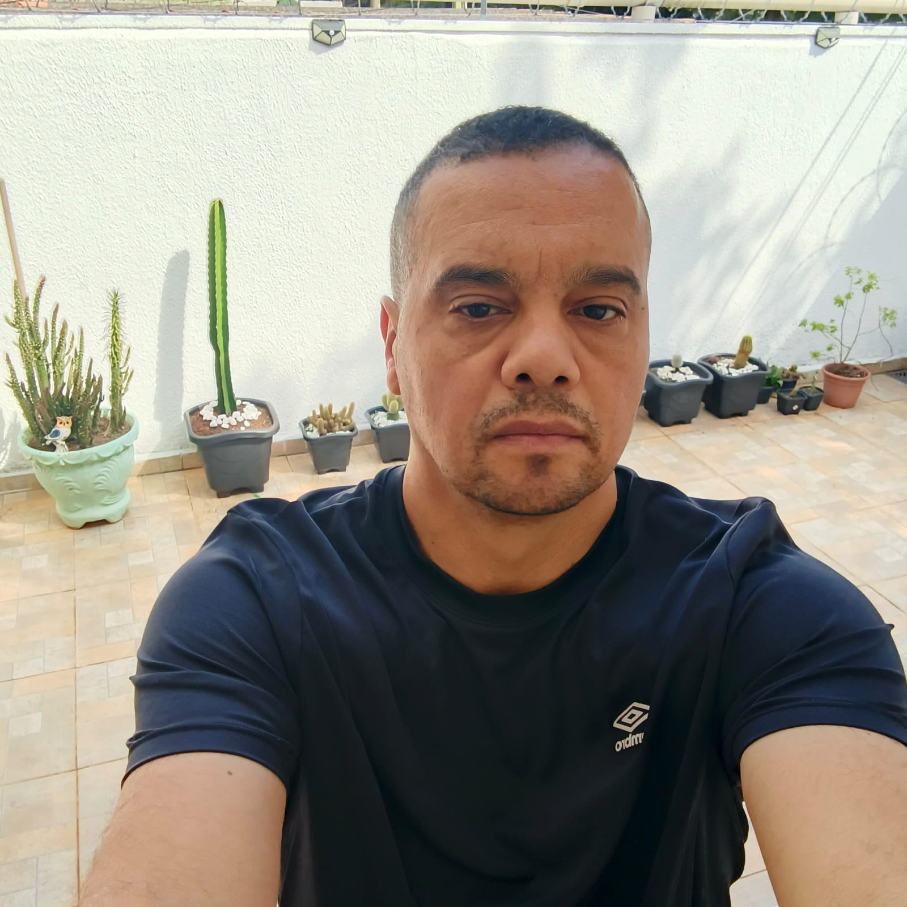

Treinamento & Capacitação
Formação de servidores e equipes com base na prática real do serviço penitenciário.
- Instrução em Prática de Serviço Penitenciário
- Capacitação de novos servidores
- Didática apoiada na Pedagogia
Rodrigo Donizetti Tricanico
Policial Penal Instrutor na CECEP Tecnólogo em Cibersegurança
Uno a experiência de campo em segurança pública à formação em Cibersegurança, Inteligência Artificial e Pedagogia para capacitar equipes e liderar com segurança.

Três frentes em que minha trajetória gera resultado direto.
Formação de servidores e equipes com base na prática real do serviço penitenciário.
Liderança testada em mais de 20 anos de segurança pública e na direção de núcleo.
Visão de segurança da informação e uso estratégico de Inteligência Artificial.
Vivência operacional, docência e formação técnica em um mesmo perfil.
Policial Penal da Secretaria da Administração Penitenciária de São Paulo (SAP-SP), com mais de 20 anos de serviço público dedicados à segurança, à custódia e à gestão de equipes. Por mais de quatro anos, atuei como Diretor de Núcleo de Segurança e Disciplina e, desde 2025, sou instrutor da disciplina Prática de Serviço Penitenciário na CECEP, contribuindo para a formação de novos servidores.
Tecnólogo em Cibersegurança, pós-graduando em Estratégia e Desenvolvimento de Soluções de IA e licenciando em Pedagogia, busco unir a experiência de campo ao uso responsável da tecnologia na segurança pública.
Mais de 20 anos em segurança pública, da FEBEM à direção do Núcleo de Segurança e Disciplina da SAP-SP.
Instrutor na CECEP e licenciando em Pedagogia: transformo experiência prática em aprendizado.
Tecnólogo em Cibersegurança e pós-graduando em Estratégia e Desenvolvimento de Soluções de IA.
Mais de 20 anos dedicados à segurança pública.
Coordenadoria de Ensino, Cultura e Pesquisa (CECEP)
Secretaria da Administração Penitenciária (SAP-SP)
Secretaria da Administração Penitenciária (SAP-SP)
Fundação Estadual para o Bem-Estar do Menor (FEBEM)
Base de conhecimento e qualificação contínua.
Estratégia, planejamento e desenvolvimento de soluções baseadas em Inteligência Artificial.
Curso superior de tecnologia com foco em segurança da informação.
Segunda formação superior, cursando o 4º de 8 semestres.
Ensino médio completo.


Desenvolvidas na prática profissional e na formação acadêmica.
Segurança é antecipar riscos, preparar pessoas e proteger vidas.
Estou à disposição para oportunidades, parcerias, treinamentos e para trocar ideias sobre segurança pública, educação e tecnologia.